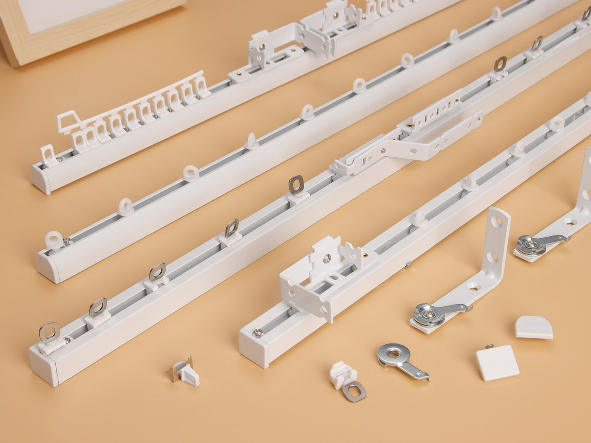
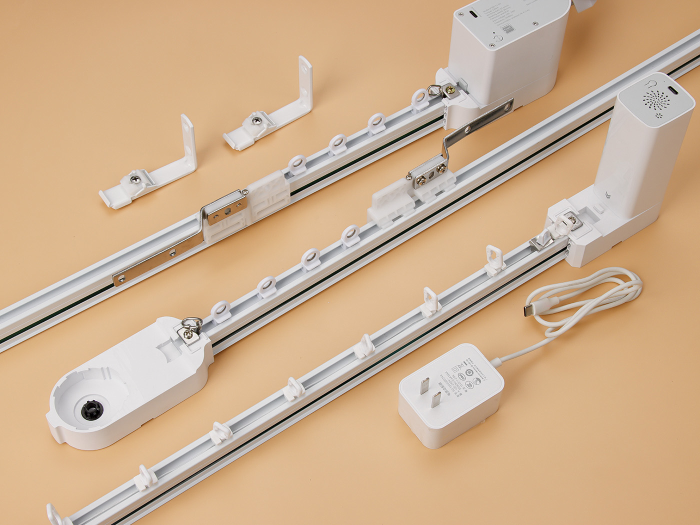
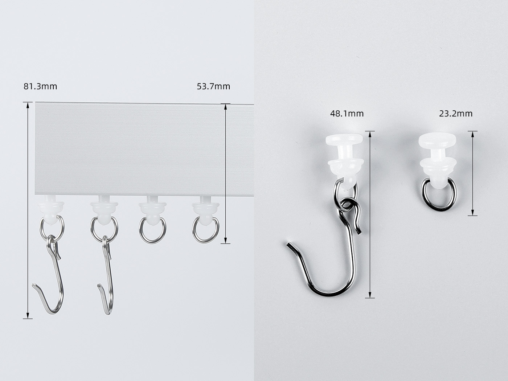

Hotel and Apartment Projects
Consistent track, runner, bracket, and end cap sets for repeated room layouts and project procurement.
Wholesale aluminum track system
B2B Curtain Track Profile and Matched Accessory Supply
AOOTUS supplies aluminum curtain track as a complete sourcing package for wholesalers, engineering procurement teams, curtain project contractors, and OEM customers. Track profiles, carriers, rollers, brackets, connectors, end caps, curtain tapes, screws, and packing can be confirmed together for practical quotation.

System position
This page presents aluminum curtain track as a system-level product. Buyers can confirm the rail profile first, then match accessories, installation method, packing, and project quantity.
Extruded aluminum track profiles supplied by standard export length or cut-to-length order.
Carriers, rollers, brackets, connectors, end caps, hooks, tapes, and screws quoted as one set.
Suitable for hotels, apartments, commercial interiors, residential projects, and replacement programs.
Finish, length, label, barcode, accessory bag, and carton method can be prepared for B2B orders.
Applications
Application images show where the aluminum curtain track system is typically used. English notes below each image explain the buyer-facing use case without relying on text inside the image.
Consistent track, runner, bracket, and end cap sets for repeated room layouts and project procurement.

Track profile, carrier quantity, bracket spacing, and curtain weight can be matched for long-span openings.

Ceiling-mounted aluminum track can support office, studio, room divider, and flexible interior layouts.
Product details
Use these blocks as visual support while the English descriptions define the quotation logic for international buyers. Final images can be replaced with dedicated aluminum product photos later.

Main aluminum rail profile for smooth carrier movement. Profile selection is matched with curtain weight, span, and finish.

Carriers, gliders, and rollers are selected to support daily curtain movement and replacement accessory sets.

End caps close the track run and help keep the installed system clean, complete, and ready for project delivery.

Ceiling fixing clips support direct installation. Clip type is matched with the selected profile and ceiling condition.

Wall brackets and mounting accessories can be selected for window positions where ceiling fixing is not preferred.
Straight connectors and layout transition parts help extend track runs and keep long sections aligned.

Track length, bracket spacing, curtain weight, and installation method should be confirmed together.

Hooks, rings, curtain tapes, and small parts can be packed with the track for a complete sales package.

For automation-ready projects, compatible motor-ready track and accessory options can be discussed separately.
Installation planning
For project quotation, the track length, fixing method, and accessory set are confirmed together. This follows the same planning logic as the hospital system page, adjusted for standard aluminum curtain track use.

Standard curtain
Ripplefold curtain
Uses separate runners without a connecting cord. Each runner moves independently and can be spaced to suit the curtain width and pleat requirement.
Components: aluminum track, end cap, independent runners, master carrier, straight connector, 90-degree elbow connector, mounting clips, and standard curtain tape.
Uses runners connected by a spacing cord at fixed intervals. The carrier set works with ripplefold tape to maintain regular, evenly spaced folds.
Components: aluminum track, ripplefold end cap, connected ripplefold runners, master carrier, straight connector, 90-degree elbow connector, mounting clips, and ripplefold curtain tape.
Factory machine-bent curved tracks can be customized from project drawings or templates for bulk engineering projects and retail businesses that require ready-shaped curved track orders. Hand-bendable track profiles are also available as a separate option for manual on-site adjustment.
Accessory reference
Like the hospital detail page, this section separates the purchase logic from the main specification table. Buyers can confirm which parts need to be packed with the aluminum track.
Runner / Carrier
End Cap
Ceiling Clip
Wall Bracket
Connector
Hook / Tape Set
Accessory Kit
Specification guide
Use this table to prepare the first inquiry. Final values depend on selected profile, order quantity, packing method, and project requirement.
| System Type | Aluminum curtain track system with matched running and mounting accessories |
|---|---|
| Main Material | Extruded aluminum profile with compatible plastic, steel, or alloy accessory options |
| Installation Method | Ceiling mount, wall mount, bracket mount, or mixed installation by project condition |
| Length Options | Standard export lengths, cut-to-length production, or project-specific length packing |
| Finish Options | White powder coating, anodized silver, black coating, raw aluminum, or custom color by order quantity |
| Compatible Accessories | Carriers, gliders, rollers, end caps, connectors, ceiling brackets, wall brackets, hooks, rings, tapes, and screws |
| Application | Hotel rooms, apartments, homes, offices, commercial interiors, project replacement, and distribution channels |
| Packing Method | Bulk carton packing, accessory kit packing, private label packing, barcode, and OEM carton support |
| Buyer Type | Wholesalers, importers, distributors, project contractors, engineering procurement teams, and OEM brands |
OEM / Project Support
Send profile drawings, target length, finish color, installation method, accessory list, or reference samples. We can prepare a practical quotation for wholesale, project, or OEM supply.
Product inquiry
Share your target profile, length, finish, installation method, accessory set, packing method, and estimated order quantity. We can reply with matched system suggestions and quotation details.